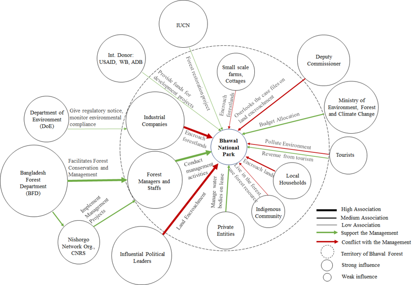
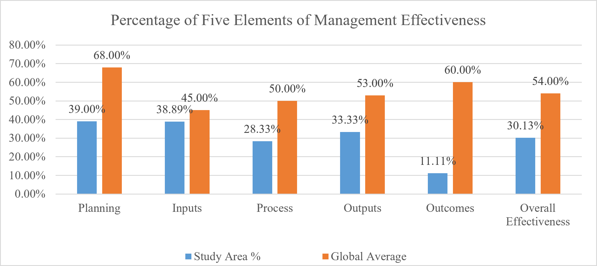
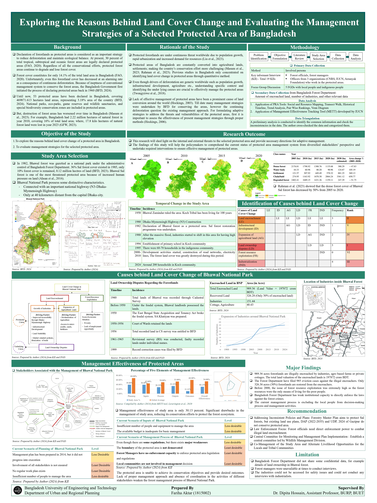

Ranked driver
#1
Land ownership disputes
Pairwise ranking identified land-ownership disputes as the highest-ranked cause behind land-cover change.
A qualitative case study of Bhawal National Park examining why forest cover is being lost, how current management performs, and what institutional and planning changes could strengthen conservation.
What is driving land-cover change in a highly pressured protected area, and how effective is the existing management system in responding to those pressures?
Explore the reasons behind land-cover change of a protected area in Bangladesh.
Evaluate management strategies for the selected protected area.
Forest officials, protected-area managers, and representatives of relevant conservation organizations.
Local residents and indigenous community members discussing temporal change, livelihoods, and forest pressures.
Social/resource mapping, transect walk, historical timeline, trend analysis, pairwise ranking, and Venn diagram.
IUCN-WCPA framework used to assess planning, inputs, process, outputs, and outcomes of protected-area management.
Pairwise ranking identified land-ownership disputes as the highest-ranked cause behind land-cover change.
The Forest Department data used in the study reported substantial occupation of protected forestland by multiple land uses.
Industrial growth emerged as a major driver, alongside land encroachment and agricultural expansion.
Approximately 326 acres were reported recovered, representing only about 30% of the encroached land.
Forest authorities were found to have limited institutional capacity to enforce regulations and address forest crime.
Local and indigenous communities were found to be insufficiently included in management decisions and activities.
Overall management effectiveness for Bhawal National Park, compared in the thesis with a reported global protected-area average of 54%.

Actors associated with the management of Bhawal National Park, identified through interviews and focus groups.

Performance across planning, inputs, process, outputs and outcomes, including comparison with the global average reported in the thesis.
Address inconsistencies between forest-protection goals and planning documents affecting Gazipur and the protected area.
Improve the ability of forest officials to respond to illegal encroachment and other forest crimes.
Establish a central mechanism to monitor management-plan implementation and coordinate responsible agencies.
Increase meaningful participation of local and indigenous communities while reducing livelihood pressures on forest resources.

Some confidential Forest Department information, including detailed land-ownership data, was not available.
Availability of forest managers and key officials constrained some interviews and the depth of engagement.
Industrialists and some encroachers could not be interviewed because access to industrial sites raised safety and accessibility concerns.